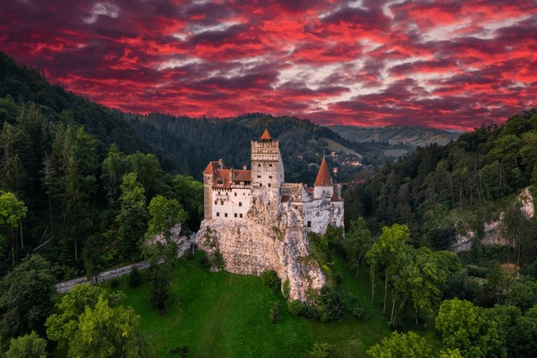

Castelul Bran - Istorie si mister
Castelul Bran este unul dintre cele mai cunoscute monumente istorice din Romania. Situat in apropierea orasului Brasov, acesta atrage anual sute de mii de turisti din intreaga lume. Construit in Evul Mediu, castelul a avut rol strategic de aparare si control al trecatorilor dintre Transilvania si Tara Romaneasca.
Astazi, Castelul Bran este celebru atat pentru istoria sa reala, cat si pentru legendele care il leaga de celebrul personaj Dracula.
Concluzie
Castelul Bran reprezinta un simbol important al istoriei si culturii romanesti. Imbinand realitatea istorica cu legendele fascinante despre Dracula, acest castel continua sa atraga vizitatori din intreaga lume.